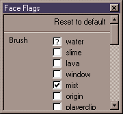

Python - Console
Updated 27 Mar 2003
- QuArK Information Base
- 2. Map editing
- 2.7. Map compiling errors
|
|
Python - Console
Updated 27 Mar 2003
|
Upper levels: - QuArK Information Base - 2. Map editing - 2.7. Map compiling errors |
|
2.7.6. Python - Console |
[ - - ] |
The Python Console displays steps and build programs ran during the compilation of a map file, along with a listing of errors or warnings that it may encounter during the building process. Some of the types of errors you may experience, the reasons and necessary correction steps are listed below by category. |
|
Index |
|
Mixed face contents |
cdunde - 27 Mar 2003 | [ Top ] |
Getting an error similar to the above, usually means that the .MAP file has a brush with different types of flag settings, for its individual faces, that are conflicting for the game and causing the warning. These type of errors will normally not cause a problem for the game to run. But it is usually advisable to 'clean up the map' when ever possible to avoid potential problems with the way the game does run. Correction Steps: 2) enter the Entity and Brush numbers (separated with a space) shown in the Python console that you wish to work on and press your 'Enter' key. This will select (highlight) the problem brush in both the tree and editor views. If you do not see the highlighted brush in the editor views, go to the Selection menu and pick the Zoom to selection item to bring it into view.  3) Now bring up the Face Flags window for that brush. Notice the question mark in the 'water' flag check box. This is telling you that some of the faces are set with this flag and some are not. Just click on the box with the question mark and it will go away. Click on the box again and it will show a 'check mark' like the mist flag has. Now all the faces for this brush have the same flag settings and will eliminate the Python-console warning for your next compile. Repeat the process for each brush shown in the console. |
|
Copyright (c) 2009, GNU General Public License by The QuArK (Quake Army Knife) Community - http://quark.sourceforge.net/ |
[ - Top - ] |